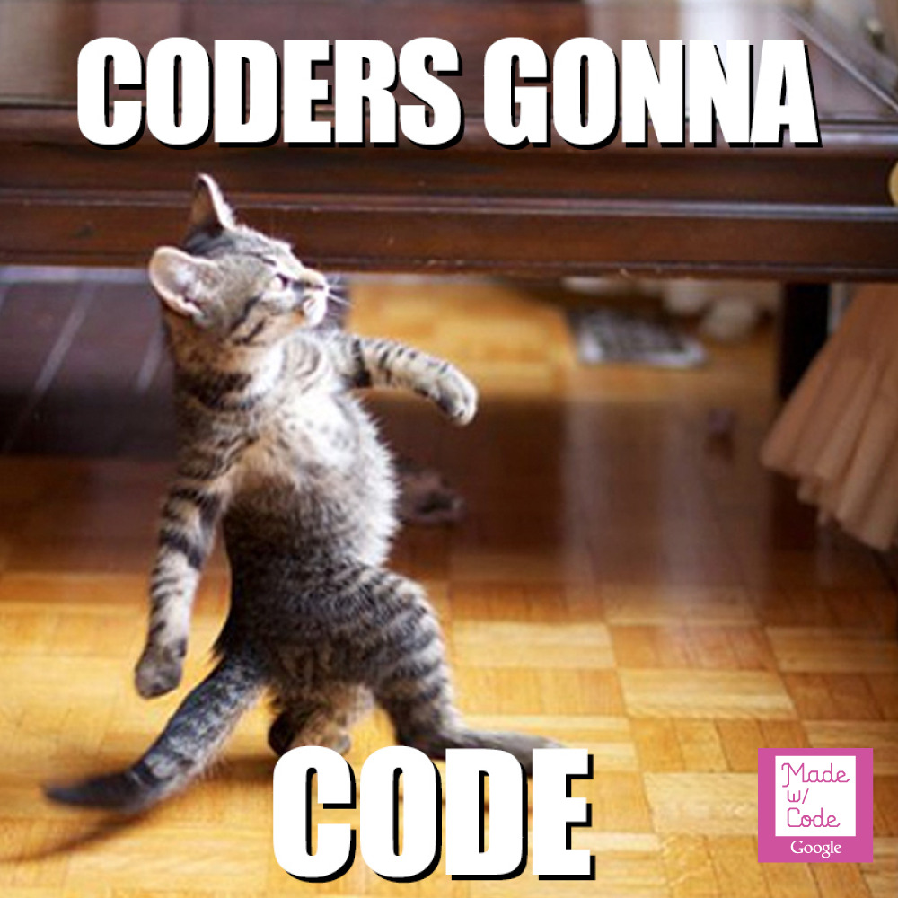

## Hello there, developer! *Start by pressing right arrow* <!--<img style="background: none; border: none;" data-src="https://cdn2.hubspot.net/hubfs/5147418/demos/giosg-partymode.png">-->
Welcome to Giosg backend coding assignment. Goal of this assignment is to give us better picture of your skills and also possibility for you to showcase your talent! Completing this assignment will usually take anywhere from 2 hours to 6 hours depending on your skill level.
## Lets get started!
## Customer training event Giosg customer success team is organizing event for our customers. Event will have trainings, work shops and of course good food and drinks. Our amazing HR lady Jenni was tasked to get food and drinks for the event. As Jenni is new and does not have a clue how much she should get each flavor we need to help her!
To make the event successfull we need to use our data from previous events to estimate how much she needs to purchase each flavor. For this reason you need to build a web application to aggregate and display the data from previous events.
# Specs *Scroll through all requirements by pressing down arrow. After that you can continue by pressing right arrow.*
## Main requirements * Web app should be done using Django framework * App should have login page. All other pages and APIs should be accessible only when logged in. * App should have "results" -page and 2 RESTfull APIs for fetching data. * App should have API endpoints for `/summary` and `/statistics`.
## Login page * Login page should allow user to login using Django's standard authentication system * No need for password reset or other fancy stuff * After successfull login, user should be redirected to results page
## Results page * Page should have inputs for start date, end date and a submit button. * Clicking submit button should query your API (with ajax) which in turn should fetch data from Giosg API. * When request completes, results should get rendered to screen.
## Data on results page * On top of page there should be boxes for "Food", "Non-alcoholic drinks" and "Alcoholic drinks". * These boxes should show total number of food items, total number of non-alcoholic drinks and alcoholic drinks consumed. * On bottom of the page there should be table for displaying all data points returned from Giosg API. * There should be columns: Date, Category, Event name, Item name and quantity.
## Results page layout This is how results page could look like. Your app does not need to look exactly like this!
## REST API endpoints * Your app should have `/summary` and `/statistics` API * When querying these APIs, request to Giosg API should be made and data fetched. * Both APIs should take start date and end date as parameters.
## Querying Giosg API * API url is: https://api.giosg.com/api/events/v1/orgs/6fb6381a-4fdc-4c62-8678-ca8388d5d05e/fetch * You need to use header for authentication. ``` Authorization: Token <token here> ```
## Querying Giosg API * API url is: https://api.giosg.com/api/events/v1/orgs/6fb6381a-4fdc-4c62-8678-ca8388d5d05e/fetch * You need to use header for authentication. ``` Authorization: Token <token here> ``` * Request should be `POST` with following content: ```json { "sources": [ "untrusted" ], "interval": { "start": "2020-02-17T21:28:56.865Z", "end": "2020-02-20T23:28:56.865Z" }, "granularity": "day", "group_by": [ "category", "action", "label" ], "organization_id": "6fb6381a-4fdc-4c62-8678-ca8388d5d05e", "vendor": "com.giosg.journalist", "aggregations": [ "sum" ], "filters": {} } ```
## Summary API * Your app should have `/summary` API which should return total sum of food items, soft drinks and alcoholic bewerages consumed in the queried time range. ```json { "food": 456, "soft_drinks": 868, "alcholic_drinks": 12 } ```
## Statistics API * Your app should have `/statistics` API which should return all data points returned by Giosg API. ```json [ { "date": "2020-02-20T22:08:58.897Z", "category": "Soft drinks", "event_name": "Training event", "item": "Coca-Cola", "quantity": 9053 }, { "date": "2020-02-20T22:08:58.897Z", "category": "Food", "event_name": "Training event", "item": "Salami Pizza", "quantity": 234 } ] ```
## Bonus points and things to consider * Secrets management * Great documentation on how to run and build/install if needed. :) * Something other cool that was not mentioned here! :) * Remember to not commit any access tokens to repository!
## Questions? If you have any questions don't hesitate to ask! We are happy to help. You can reach us by mail at <a href="mailto:seniordev@giosg.com">seniordev@giosg.com</a> or come to our website <a target="_blank" href="https://giosg.com">giosg.com</a> and have a online chat with us! 💬
## Returning this assignment You can send link to your master piece with email to <a href="mailto:seniordev@giosg.com">seniordev@giosg.com</a>. <a href="https://github.com">Github</a> or <a href="https://gitlab.com">Gitlab</a> repo link is preferred.
Happy coding!
Hope we hear from you soon! :)
